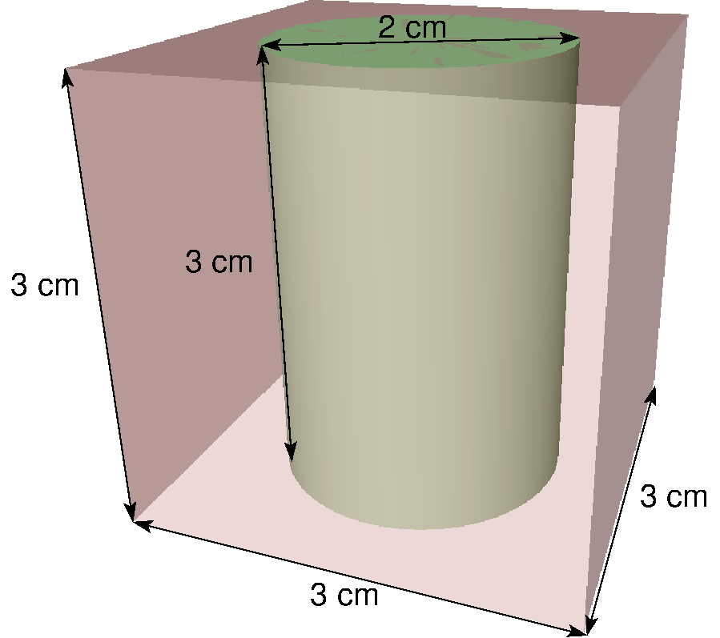

The results presented here have been generated using validation_03.cxx. In this test, we will simulate the geometry as follows:

The incident energy, Ii, is 80 keV (i.e. 0.08 MeV).
From the literature, we know:
| Material | HU (estimated at 80 keV) | Density (ρ) (in g/cm3) | Mass attenuation coefficient (μ/ρ) at 80 keV (in cm2/g) | Linear attenuation coefficient (μ) at 80 keV (in cm-1) |
|---|---|---|---|---|
| Water, Liquid | 0.000 | 1.000E+00 | 1.837E-01 | 1.837E-01 |
| Bone, Cortical (ICRU-44) | 1329.886 | 1.920E+00 | 2.229E-01 | 4.280E-01 |
| Tissue, Soft (ICRU-44) | 51.715 | 1.060E+00 | 1.823E-01 | 1.932E-01 |
| Material | HU (estimated at 80 keV) | Density (ρ) (in g/cm3) | Mass attenuation coefficient (μ/ρ) at 80 keV (in cm2/g) | Linear attenuation coefficient (μ) at 80 keV (in cm-1) |
|---|---|---|---|---|
| Water, Liquid | 0.000 | 1.018E+00 | 1.811E-01 | 1.844E-01 |
| Bone, Cortical (ICRU-44) | 1329.886 | 1.804E+00 | 2.201E-01 | 3.971E-01 |
| Tissue, Soft (ICRU-44) | 51.715 | 1.063E+00 | 1.823E-01 | 1.937E-01 |